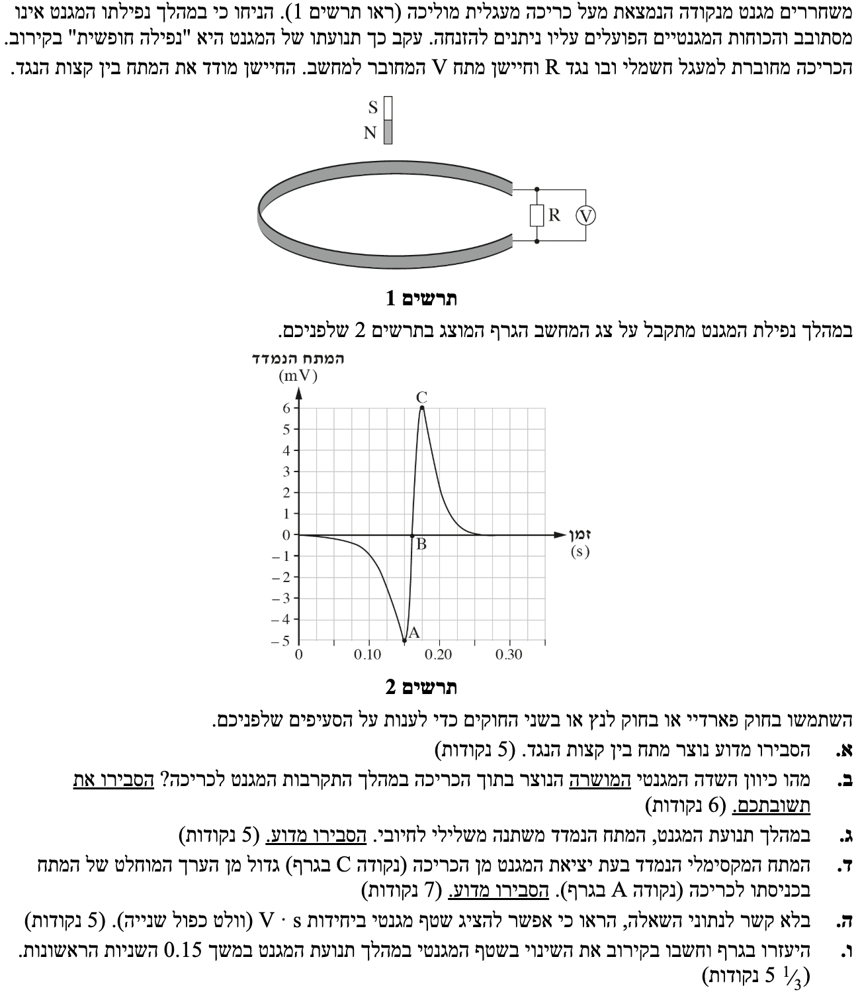

שלום תלמידים יקרים! לפנינו שאלה קלאסית בנושא השראה אלקטרומגנטית וחוק פארדיי-לנץ. השאלה משלבת הבנה מושגית עמוקה של השתנות שטף מגנטי יחד עם חישובים מתוך גרף. בואו נפתור אותה צעד אחר צעד!

אחת הטעויות הנפוצות היא להסתכל על קווי השדה שמחוץ למגנט שמתעקלים כלפי מעלה, ולהניח שהשטף אמור להתהפך. אבל הפיזיקה קובעת אחרת! קווי שדה מגנטי הם תמיד לולאות סגורות. המשמעות היא שכל קו שדה שעולה למעלה מחוץ למגנט, חייב לרדת למטה בתוך גוף המגנט כדי לסגור מעגל.
כאשר המגנט חולף דרך הכריכה, הכריכה חובקת בתוכה את כל גוף המגנט. לכן, היא "לוכדת" את כל קווי השדה הפנימיים העוצמתיים שיורדים מטה (המסומנים בחיצים לבנים). גם אם חלק מהקווים העולים נכנסים לשטח הכריכה, הם תמיד יהוו רק חלק קטן מסך הקווים, בעוד הקווים היורדים (שמייצגים את כל השדה) תמיד "מנצחים". מסקנה: נטו השטף החודר את הכריכה מכוון כלפי מטה לאורך כל התנועה!
בסימולציה שלפניכם, כדי להקל עליכם לראות זאת ויזואלית, הרחבנו את המגנט כך שהקווים העולים נמצאים ברובם מחוץ לכריכה, אך זכרו שהעיקרון הזה נכון תמיד ובכל רוחב. הַפעילו את הסימולציה וראו כיצד השדה הפנימי חודר את הכריכה!
1. המגנט מהווה מקור לשדה מגנטי. כאשר המגנט מתקרב לכריכה (או מתרחק ממנה), עוצמת השדה המגנטי באזור הכריכה משתנה.
2. כתוצאה מכך, השטף המגנטי \( \Phi_B \) העובר דרך שטח הכריכה משתנה בזמן.
3. על פי חוק פארדיי, קצב שינוי השטף המגנטי בזמן יוצר כוח אלקטרו-מניע (כא"מ, \( \varepsilon \)) מושרה בכריכה.
4. מכיוון שהכריכה מחוברת לנגד \( R \), נוצר מעגל חשמלי סגור. הכא"מ המושרה דוחף מטענים במעגל ויוצר זרם חשמלי מושרה \( I \).
5. הזרם המושרה זורם דרך הנגד, ועל פי חוק אוהם \( V = IR \), נוצר הפרש פוטנציאלים (מתח) בין קצות הנגד, אותו מודד החיישן.
מתח נוצר עקב שינוי בשטף המגנטי דרך הכריכה המשרה כא"מ, אשר מזרים זרם במעגל הסגור ויוצר מתח על הנגד.
1. נזהה את כיוון השדה המגנטי המקורי של המגנט באזור הכריכה: קווי שדה מגנטי יוצאים תמיד מקוטב צפון (N). מכיוון שקוטב N פונה כלפי מטה אל הכריכה, קווי השדה של המגנט באזור הכריכה מכוונים כלפי מטה (לעבר הכריכה).
2. המגנט מתקרב לכריכה, ולכן עוצמת השדה המגנטי המקורי (שמכוון מטה) הולכת וגדלה.
3. כתוצאה מכך, השטף המגנטי המכוון כלפי מטה הולך וגדל.
4. על פי חוק לנץ, הכריכה "שואפת" להתנגד לגידול הזה בשטף הכלפי-מטה. לכן היא תיצור שדה מגנטי מושרה בכיוון הפוך לגידול, כלומר כלפי מעלה.
מסקנה: השדה המגנטי המושרה יכוון כלפי מעלה.
כפי שראינו, כאשר המגנט מתקרב לכריכה (חלקו הראשון של הגרף), השדה המגנטי שלו באזור הכריכה מכוון כלפי מטה, ועוצמתו עולה ככל שהמגנט מתקרב. לכן השטף המגנטי כלפי מטה גדל. במצב זה, נגזרת השטף לפי הזמן חיובית (\( \frac{d\Phi_B}{dt} > 0 \)). לפי הנוסחה (הכוללת מינוס), נקבל כא"מ מושרה בעל סימן שלילי.
נקודה B מייצגת את הרגע בו מרכז המגנט חולף בדיוק באמצע הכריכה. ברגע זה, השטף המגנטי העובר דרך הכריכה מגיע לערכו המקסימלי. בנקודת קיצון, הנגזרת שווה לאפס (\( \frac{d\Phi_B}{dt} = 0 \)), ולכן הכא"מ והמתח מתאפסים בנקודה B.
לאחר שעבר את מרכז הכריכה, המגנט מתרחק ממנה כלפי מטה. חשוב לשים לב: המגנט נמצא כעת מתחת לכריכה, אך קוטב N עדיין פונה מטה. קווי השדה המגנטי נכנסים אל קוטב הדרום (S) שנמצא בחלקו העליון של המגנט (ופונה עתה כלפי מעלה, אל עבר הכריכה). כלומר, קווי השדה באזור הכריכה עדיין מכוונים כלפי מטה (נכנסים אל קוטב S). אולם כעת, משום שהמגנט מתרחק, עוצמת שדה זה הולכת ויורדת, ולכן השטף המגנטי הכלפי-מטה קטן. במצב זה, הנגזרת של השטף שלילית (\( \frac{d\Phi_B}{dt} < 0 \)). הצבת ערך שלילי בנוסחת פארדיי תניב כא"מ מושרה בעל סימן חיובי.
מסקנה: המתח משנה סימן מכיוון שמגמת השטף משתנה: מהגדלת השטף בעת התקרבות (היוצרת מתח שלילי) להקטנת השטף בעת התרחקות (היוצרת מתח חיובי).
1. המגנט משוחרר ממנוחה ונופל מטה. כיוון שהכוחות המגנטיים זניחים (נתון בשאלה), המגנט נע בתאוצת הכובד הארצית (\( g \)) כלפי מטה.
2. בתנועה שוות תאוצה, גודל המהירות הולך וגדל ככל שהזמן עובר והגוף יורד נמוך יותר.
3. לכן, מהירות המגנט כאשר הוא יוצא מהכריכה (סביבת נקודה C) גדולה יותר ממהירותו כאשר הוא נכנס אליה (סביבת נקודה A).
4. מהירות גדולה יותר משמעותה שהמגנט חולף על פני מרחקים זהים בזמן קצר יותר. לכן, השטף המגנטי משתנה באותו שיעור כולל, אך בפרק זמן קצר יותר \( \Delta t \).
5. מבחינה מתמטית, הערך המוחלט של הנגזרת \( \left|\frac{d\Phi_B}{dt}\right| \) גדול יותר כאשר המהירות גבוהה יותר. על פי חוק פארדיי, קצב שינוי מהיר יותר גורר בהכרח ערך מוחלט גבוה יותר של הכא"מ המושרה.
מסקנה: המגנט מאיץ בנפילתו, ולכן מהירותו בעת היציאה (C) גדולה מבעת הכניסה (A). מהירות גדולה יותר גורמת לקצב שינוי שטף מהיר יותר, ולכן לכא"מ בעל ערך מוחלט גדול יותר.
נבצע אנליזת יחידות (ממדים) על חוק פארדיי. הסימן מינוס ומספר הכריכות \( N \) הם חסרי יחידות ולכן נתעלם מהם בניתוח.
היחידה של כוח אלקטרו-מניע \( \varepsilon \) (ומתח) היא וולט (\( \text{V} \)).
היחידה של זמן \( dt \) היא שנייה (\( \text{s} \)).
נבודד את יחידות השטף המגנטי \( [\Phi_B] \) על ידי הכפלה ב- \( \text{s} \):
מסקנה: מתוך חוק פארדיי נובע ישירות כי יחידת השטף המגנטי (ובר) שקולה ל- \( \text{V} \cdot \text{s} \).
הגרף אינו קו ישר, אלא עקומה שלוקח לה זמן "להתעורר" ורק לקראת הסוף היא צונחת בתלילות. לכן, קירוב של השטח למשולש יכלול הרבה שטח ריק וייתן תוצאה שגויה. השיטה המדויקת והמקובלת כאן היא ספירת משבצות הכלואות בין הגרף לציר הזמן.
נביט היטב בשנתות הגרף ונגדיר "משבצת יסוד": רוחב כל משבצת קטנה על ציר הזמן הוא \( \Delta t = 0.025 \text{ s} \) (ישנן 4 משבצות בין 0 ל-0.10), וגובהה הוא \( \Delta V = 1 \text{ mV} = 10^{-3} \text{ V} \).
בספירה קפדנית של השטח הכלוא מתחת לציר הזמן בין \( t=0 \) ל- \( t=0.15 \text{ s} \) (6 משבצות רוחב), רואים כי הגרף נצמד תחילה לאפס ולאחר מכן צונח. בסך הכל ניתן להעריך כי ישנן כ-8 משבצות קטנות שלמות (על ידי חיבור ויזואלי של חלקי המשבצות).
נחשב את השטח הכולל (הנמצא מתחת לציר ולכן המתח שלילי):
על פי חוק פארדיי, השינוי בשטף שווה למינוס השטח (האינטגרל של המתח):
מסקנה: השינוי בשטף המגנטי במהלך 0.15 השניות הראשונות מוערך בכ- \( 2 \cdot 10^{-4} \text{ Wb} \).